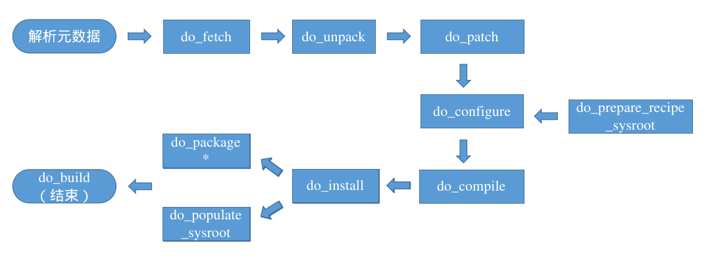
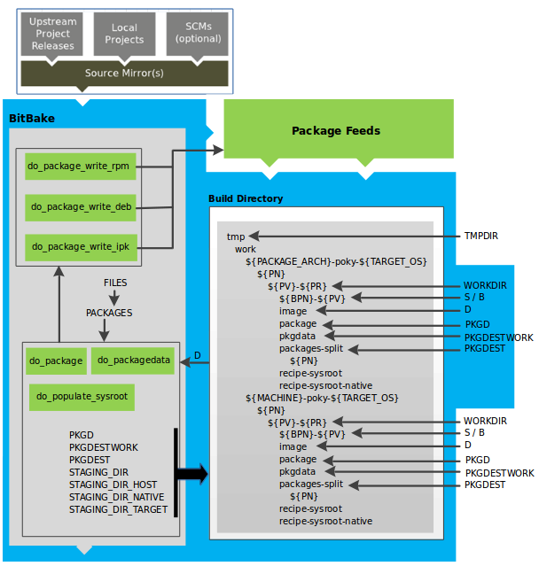

Yocto 入门文档三¶
任务是BitBake的执行单元，变量可能会对任务产生影响。本篇章介绍常用的变量与任务。
基本变量¶
此章节仅介绍一些最基本的变量，开发者如果有不理解的变量，可以在 poky/documentation/ref-manual/variables.rst 文档查找介绍。此外，这些变量通常在bitbake.conf文件存在定义。本节提供了在OpenEmbedded（Yocto）构建系统中定义的变量的参考。
MACHINE： 指定使用的硬件配置文件，通常在local.conf文件定义；
DISTRO： 指定使用的发行版配置文件，通常在local.conf文件定义；
PN： 软件包名，一般是根据文件名自动生成；除了一些交叉编译的包，如gcc-cross会在bb中重新定义；
PV： 软件包版本；
PR： 食谱的修订，默认为r0；当包管理器在已构建的镜像上动态安装包时，PR很重要，当前openEuler未启用；
BPN： 软件包名，去除指定的前后缀(如-native、-cross等)；
BP： ${BPN}-${PV};
SRC_URI： 源码路径，可以为上游或者本地文件路径，上游源码需要使用校验值；
LICENSE： 配方的源许可证列表，必须设置；如果设置为”CLOSED”则关闭；
LIC_FILES_CHKSUM： 配方源代码中许可证文本的校验和，与LICENSE变量配合使用；
PACKAGE_ARCH： 生成包的体系结构；
TARGET_VENDOR： 指定目标供应商的名称，openEuler设置为”-openeuler”；
TARGET_OS： 指定目标的操作系统；
MULTIMACH_TARGET_SYS： 生成包的目标系统类型的唯一标识，默认为${PACKAGE_ARCH}${TARGET_VENDOR}-${TARGET_OS}；
WORKDIR： 构建配方的工作目录的路径名，指向${TMPDIR}/work/${MULTIMACH_TARGET_SYS}/${PN}/${EXTENDPE}${PV}-${PR}，EXTENDPE变量通常不被设置；
S： 构建过程中源代码位置，默认为${WORKDIR}/${BPN}-${PV}；
B： 构建过程中生成对象所在的目录，默认与S相同；一些类会将B设置为${WORKDIR}/build；
D： 相当于
make install后的目标目录，指向${WORKDIR}/image；PACKAGES： 表示配方创建的包列表；
FILES_xxx： 放置在包中的文件和目录列表；
PKGD： 要打包的文件的目录，指向${WORKDIR}/package；
PKGDEST： 将文件拆分为单独的包后，指向要打包的文件的父目录，该目录是PACKAGES中指定的每个包的目录，指向${WORKDIR}/packages-split；
DEPENDS： 列出配方的构建时依赖关系，配方在构建时需要其它配方的内容（例如头文件和共享库）；
RDEPENDS： 列出程序包的运行时依赖项，这些依赖项是必须安装的其他程序包，以便程序包正常运行；
RECIPE_SYSROOT： 指向${WORKDIR}/recipe-sysroot；
RECIPE_SYSROOT_NATIVE： 指向${WORKDIR}/recipe-sysroot-native；
SYSROOT_DESTDIR： 指向${WORKDIR}/sysroot-destdir；
SYSROOT_DIRS： 暂存到${SYSROOT_DESTDIR}的目录；
STAGING_DIR_HOST： 组件运行所在的系统上的sysroot路径，默认为${RECIPE_SYSROOT}。
STAGING_DIR_NATIVE： 构建主机上运行的组件使用的sysroot的路径，默认为${RECIPE_SYSROOT_NATIVE}；
STAGING_DIR_TARGET： 当构建在系统上执行的组件并为另一台机器生成代码（例如cross-canadian配方）时使用的sysroot路径；
STAGING_KERNEL_DIR： 包含构建树外模块所需的内核头文件的目录（内核源码目录）；
STAGING_KERNEL_BUILDDIR： 指向包含内核构建工件的目录。需要访问内核构建工件的配方构建软件可以在内核构建后在STAGING_KERNEL_BUILDDIR变量指定的目录中查找这些工件；
PACKAGE_CLASSES： 指定构建系统在打包数据时使用的包管理器（例如RPM、DEB或IPK），在local.conf文件设置；
IMAGE_ROOTFS： 指定根文件系统在构建过程中的位置（
do_rootfs任务期间）。此变量不可配置，不要更改它；IMAGE_FEATURES： 指定要包含在镜像中的主要功能列表，这些功能大多数都映射到其他安装包；
EXTRA_IMAGE_FEATURES： IMAGE_FEATURES的一部分；
IMAGE_INSTALL： 指定要安装到镜像中的程序包；
PACKAGE_EXCLUDE： ：指定不应安装到image中的包；
PACKAGE_INSTALL： 要安装到镜像中的程序包的列表，不要更改它，通常使用IMAGE_INSTALL变量间接进行修改；
DEPLOY_DIR： 指向构建系统用于放置镜像、包、SDK和其他输出文件的常规区域，这些文件已准备好在构建系统之外使用。默认情况下，此目录位于指向${TMPDIR}/deploy。
DEPLOY_DIR_IMAGE： 指向构建系统用来放置准备部署到目标计算机上的镜像和其他相关输出文件的区域。该目录是特定于机器的默认情况下，此目录指向${DEPLOY_DIR}/images/${MACHINE}/；
DEPLOYDIR： 当继承deploy类时，DEPLOYDIR指向已部署文件的临时工作区，默认指向${WORKDIR}/deploy-${PN}，此目录内容会被拷贝到${DEPLOY_DIR_IMAGE}；
CC： 用于运行C编译器的最小命令和参数；
CFLAGS： 指定要传递给C编译器的标志；
CXXFLAGS： 指定要传递给C++编译器的标志；
CPPFLAGS： 指定要传递给C预处理器（即同时传递给C编译器和C++编译器）的标志；
LDFLAGS： 指定要传递给链接器的标志；
OVERRIDES： 以冒号分隔的当前应用的覆盖列表。覆盖是一种BitBake机制，允许在解析结束时选择性地覆盖变量；
COMPATIBLE_MACHINE： 一种正则表达式，解析为一个或多个与配方兼容的目标机器。可以使用该变量来停止为配方不兼容的机器构建配方，停止这些构建对于内核特别有用。该变量还有助于提高解析速度，因为构建系统会跳过与当前机器不兼容的解析配方。
Note
export可以将变量导出为环境变量，从而在构建时对正在构建的软件可见。举例： export CFLAGS 。
基本任务¶
配方（.bb文件）使用任务来完成软件的配置、编译和打包等。本节提供了在OpenEmbedded（Yocto）构建系统中定义的任务的参考。
Yocto支持的主要任务如下：
每个包实际的任务执行顺序可以在工作目录查看，具体是 $WORKDIR/temp/log.task_order 文件。
do_build¶
配方的默认任务，依赖于构建一个配方的所有其他正常构建任务。因为Yocto默认在 meta/classes/base.bbclass 中设置了 do_build[noexec] = "1" ，因此此任务并不会真的执行，只是一个虚拟任务，用于串连起各个模块的任务流。构建时，temp目录下不会存在其执行执行脚本及执行日志文件。
do_fetch/do_unpack¶
配方必须做的第一件事是指定如何获取源文件，获取源码通过SRC_URI变量进行控制。
do_fetch 任务获取源文件， do_unpack 任务将源文件解压到工作目录（${WORKDIR}）下。默认情况下，一切都在工作目录中完成，该目录具有已定义的结构。在下图中，存在两个示例层次结构：一个基于包架构（即PACKAGE_ARCH）和一个基于机器（即MACHINE）。底层结构是相同的，区别在于OpenEmbedded构建系统使用什么作为构建目标（例如通用架构、构建主机、SDK或特定机器）。
do_fetch 任务使用SRC_URI变量定位源码文件；基于SRC_URI变量值中每个条目的前缀来确定使用哪个提取器来获取源文件， file:// 开头为本地文件， http://、git:// 等为上游获取的源文件；
OpenEmbedded构建系统使用FILESPATH变量来扫描SRC_URI中本地文件的目录位置，如果要增加新的路径不能直接修改FILESPATH变量，而是通过修改FILESEXTRAPATHS变量在FILESPATH之前加入路径；
Note
如果使用Bitbake处理配方成功解压源文件，通常需要确保${S}目录与源的结构匹配。如果从上游源tarball获取源文件，并且tarball的内部结构与名为${BPN}-${PV}的顶级子目录的通用约定相匹配，那么不需要设置S；但是，如果SRC_URI指定不使用此约定的tarball中获取源代码，或者从像Git或Subversion这样的SCM中获取源代码，则配方需要重新定义S。
详见 meta/classes/base.bbclass 。
do_patch¶
do_patch 任务在获取、解压源码后打入补丁到源码目录（${S}），根据SRC_URI变量中补丁文件写入的顺序打入补丁。
SRC_URI中提到的任何名称以
.patch或.diff结尾的文件或这些后缀的压缩版本（例如diff.gz被视为补丁）;增加
;apply=yes的任何文件也会当做补丁。
使用方法举例：
SRC_URI += " \
file://file1.patch \
file://file;apply=yes \
file://file2.patch;apply=no \
"
Note
打入补丁的位置可设置。
详见 meta/classes/patch.bbclass 。
do_prepare_recipe_sysroot¶
配方通常需要使用构建主机上其他配方提供的文件。例如，配方构建时需要访问依赖库及关联的头文件，完成这种访问的方式是用文件填充sysroot。每个配方在其工作目录中有两个sysroot，一个用于目标文件 (recipe-sysroot)，另一个用于构建主机的本地文件(recipe-sysroot-native)。
根据DEPENDS指定的依赖关系，将依赖包执行 do_populate_sysroot 任务放到sysroot的文件安装到当前配方特定的sysroot中（${RECIPE_SYSROOT}与${RECIPE_SYSROOT_NATIVE}）。
详见 meta/classes/staging.bbclass 。
do_configure¶
通过启用和禁用正在构建软件的任何构建时和配置选项来配置源码，此任务在当前工作目录设置为${B}的情况下运行。如果找到makefile（Makefile、makefile或GNUmakefile）并且CLEANBROKEN未设置为”1”，则此任务的默认行为是运行 oe_runmake clean ；如果未找到此类文件或CLEANBROKEN变量设置为”1”，则 do_configure 任务不执行任何操作。
配置选项可以来自配方本身，也可以来自继承的类。此外，软件本身可能会根据为其构建的目标进行自我配置。如果使用的是autotools类，则可以使用EXTRA_OECONF或PACKAGECONFIG_CONFARGS变量添加其他配置选项；对于继承cmake类，可通过使用EXTRA_OECMAKE变量添加配置选项。
详见 base.bbclass、autotools.bbclass、cmake.bbclass、meson.bbclass 等，以下 do_compile、do_install 任务同。
do_compile¶
编译源代码，此任务在当前工作目录设置为${B}的情况下运行。如果找到构建文件（Makefile、makefile或GNUmakefile），则此任务的默认行为是运行 oe_runmake 函数。如果没有找到这样的文件， do_compile 任务什么也不做。
do_install¶
复制要打包文件到保留区（${D}），此任务在当前工作目录设置为${B}的情况下运行。 do_install 任务，以及直接或间接依赖于已安装文件的其他任务（例如 do_package、do_package_write_*、do_rootfs）都在fakeroot下运行。
Note
安装文件时，请注意不要将已安装文件的所有者和组ID设置为计划外的值。某些复制文件的方法，尤其是使用递归 cp 命令时，可以保留原始文件的UID和GID，而这通常不是您想要的。”主机用户污染”QA检查检查的是可能拥有错误所有权的文件。受主机用户污染的QA检查检查可能具有错误所有权的文件。
安装文件的安全方法包括：
install程序。此实用程序是首选方法；带有”–no-preserve=ownership”选项的
cp命令；带有”–no-same-owner”选项的
tar命令。示例请参见源目录的meta/classes/bin_package.bbclass文件。
do_populate_sysroot¶
此任务用于将 do_install 任务安装的文件子集（$D目录的文件）复制到（SYSROOT_DESTDIR目录），默认会对里面的文件进行 strip ，之后将SYSROOT_DESTDIR目录下的文件拷贝到”${COMPONENTS_DIR}/${PACKAGE_ARCH}/${PN}”，可以通过修改SYSROOT_DIRS适配填充SYSROOT_DESTDIR的目录列表。有关如何从其他配方访问这些文件的信息，见STAGING_DIR*变量。默认情况下不会复制其他配方在构建时通常不需要的目录（例如 /etc）。
配方永远不应该直接填充SYSROOT_DESTDIR（即将文件写入SYSROOT_DESTDIR），应该在 do_install 任务期间安装到标准位置（${D}）。这种限制的原因是几乎所有填充sysroot的文件都在清单中编目，以确保在修改或删除配方时可以删除这些文件。因此，sysroot能够保持不受陈旧文件的影响。
详见 meta/classes/staging.bbclass 。
do_package¶
根据PACKAGES和FILES_xxx变量，分析在${D}目录中找到的文件，并根据可用的包和文件将它们拆分为子集。
此任务会通过PACKAGES并使用每个包对应的FILES变量将文件分配给包。如果一个文件与PACKAGES中多个包的FILES变量匹配，它将被分配到最早（最左边）的包。
除非通过ALLOW_EMPTY变量强制生成，否则不会生成变量列表中为空的包（即FILES_pkg中的任何模式都不匹配
do_install任务安装的任何文件）；
do_package 任务与 do_packagedata 任务一起还保存一些重要的包元数据。分析涉及以下以及其他项目：拆分调试符号、查看包之间的共享库依赖项以及查看包关系。
分析和包拆分过程的工作、阶段和中间结果使用以下几个方面：
详见 meta/classes/package.bbclass 。
do_packagedata¶
将 do_package 任务生成的包元数据保存在PKGDATA_DIR目录中，以使其全局可用，以便构建系统可以生成最终包。
do_package_write_*¶
- do_package_write_rpm：
创建 RPM 包（即*.rpm文件）并将它们放在包源（package feeds）区域${DEPLOY_DIR_RPM} 目录中。
- do_package_write_deb：
创建 Debian 包（即*.deb文件）并将它们放在包源区域的 ${DEPLOY_DIR_DEB} 目录中。
- do_package_write_ipk：
创建 IPK 包（即*.ipk文件）并将它们放在包源区域的 ${DEPLOY_DIR_IPK} 目录中。
- do_package_write_tar：
创建 tar.gz 包并将它们放在包源区域的 ${DEPLOY_DIR_TAR} 目录中。
详见对应的 meta/classes/package_*.bbclass 。
do_package_qa¶
对打包文件运行QA检查。在构建配方时，OpenEmbedded构建系统会对输出执行各种QA检查，以确保检测和报告常见问题。有时，当你创建一个新配方来构建新软件时，它会顺利构建。如果情况并非如此，或者当你在构建任何软件时遇到QA问题，则可能需要一些时间来解决这些问题。
虽然忽略QA消息甚至禁用QA检查很诱人，但最好尝试解决任何报告的QA问题。QA消息列表和可能遇到的问题说明可参考 poky/documentation/ref-manual/qa-checks.rst。
具体检查见 meta/classes/insane.bbclass 。
do_deploy¶
将要部署的输出文件写入${DEPLOY_DIR_IMAGE}，任务在当前工作目录设置为${B}的情况下运行。
实现此任务的配方应继承deploy类，并应将输出写入${DEPLOYDIR}，不要将其与${DEPLOY_DIR}混淆。deploy类将 do_deploy 设置为共享状态（sstate）任务，该任务可以通过使用sstate来加速。sstate机制负责将输出从${DEPLOYDIR}复制到${DEPLOY_DIR_IMAGE}。
Note
不要将输出直接写入${DEPLOY_DIR_IMAGE}，因为这会导致sstate机制出现故障。
详见 meta/classes/deploy.bbclass 。
do_rootfs¶
为镜像创建根文件系统（文件和目录结构）。
详见 meta/classes/image.bbclass 。
do_image¶
启动镜像生成过程，此任务通过 IMAGE_PREPROCESS_COMMAND 对image进行预处理，并通过动态生成的 do_image_xxx （镜像格式决定）任务构建图像。
详见 meta/classes/image.bbclass 。
do_image_complete¶
完成图像生成过程，此任务通过POSTPROCESS_COMMAND对图像执行后处理。
详见 meta/classes/image.bbclass 。
全局与局部配置关系¶
上一篇章我们了解了全局配置与局部配置的关系，简要来说全局配置文件与全局类文件定义的是全局配置（变量、任务等），bb文件中定义的是局部配置。
全局配置：通过bblayers.conf、layer.conf、bitbake.conf与base.bbclass以及引申出的其他配置文件和类文件定义的变量与任务都可视为全局配置，参与指令有
include、require、inherit、INHERIT；局部配置：bb文件中单独定义的变量与任务，也可以使用
include、require、inherit，但只对当前bb生效；
Note
全局配置与局部配置的一个区分是，当使用 bitbake -p 完成首次解析后，修改全局配置项后再运行 bitbake -p 解析时间会很长，而修改局部配置则解析时间很短，原因是全局配置影响面比较广。
可以在bb文件对全局配置进行适配（删减、附加、覆盖等），此修改只对当前bb有效，但有些全局变量是不能在bb中重新定义的，或者说即使重新定义了可能也起不到相应的作用，这其实主要与上一节的三个指令的使用有关。举例：
# bitbake.conf
include conf/local.conf
include ${MACHINE}.conf
# local.conf
MACHINE = "qemux86-64"
# test_directive.bb添加
MACHINE = "test_machine"
在解析 bitbake.conf 时会查找 conf/machine/qemux86-64.conf 而非 conf/machine/test_machine.conf ，因为 include 、 require 、 inherit 三个指令都是立刻解析的，必须在指令使用前决定变量具体值。